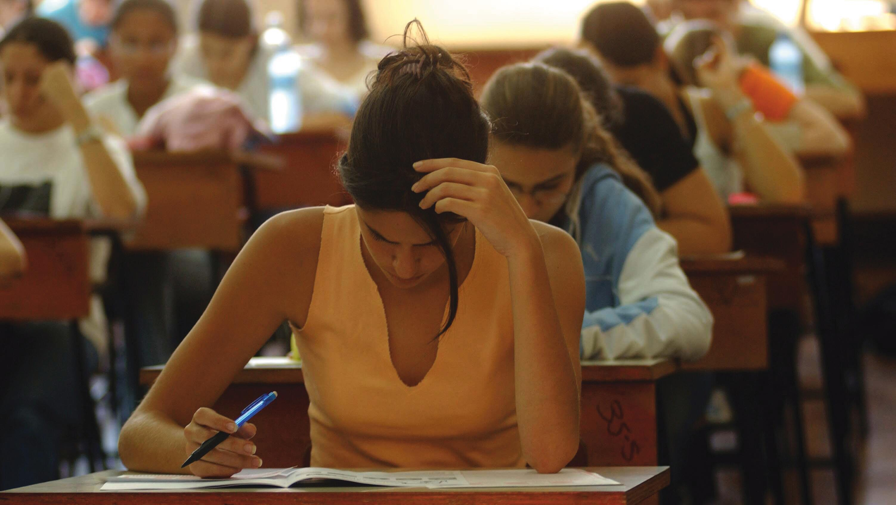

La permanencia escolar se refiere a la capacidad de los estudiantes para continuar y concluir sus estudios sin abandonarlos. Es un aspecto fundamental en la educación, ya que garantiza que los jóvenes desarrollen conocimientos, habilidades y oportunidades para mejorar su futuro. Existen diversos factores que influyen en la permanencia escolar. Entre los más importantes se encuentran el apoyo familiar, la motivación personal, el ambiente escolar y las condiciones económicas. Cuando un estudiante cuenta con respaldo emocional y recursos adecuados, es más probable que continúe su formación académica. Además, las escuelas juegan un papel clave al ofrecer un entorno seguro, inclusivo y motivador. Programas de apoyo, orientación educativa y actividades que fomenten el interés por aprender ayudan a que los alumnos se sientan parte de la comunidad escolar. Fomentar la permanencia escolar no solo beneficia al estudiante, sino también a la sociedad, ya que contribuye a formar personas preparadas, responsables y con mayores oportunidades de desarrollo.
Mantenerse en la escuela implica esfuerzo, constancia y compromiso. Aunque puedan existir dificultades, como problemas económicos o personales, es importante recordar que la educación abre puertas a nuevas oportunidades. Por ello, es fundamental promover estrategias que ayuden a los estudiantes a no abandonar sus estudios, como becas, tutorías, apoyo psicológico y la participación de la familia. Cada acción que favorece la permanencia escolar representa una inversión en el futuro de los jóvenes. Continuar estudiando no solo mejora la calidad de vida individual, sino que también fortalece a la sociedad, creando comunidades más preparadas y con mayores posibilidades de crecimiento.